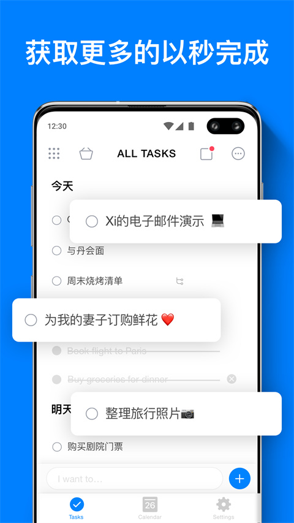
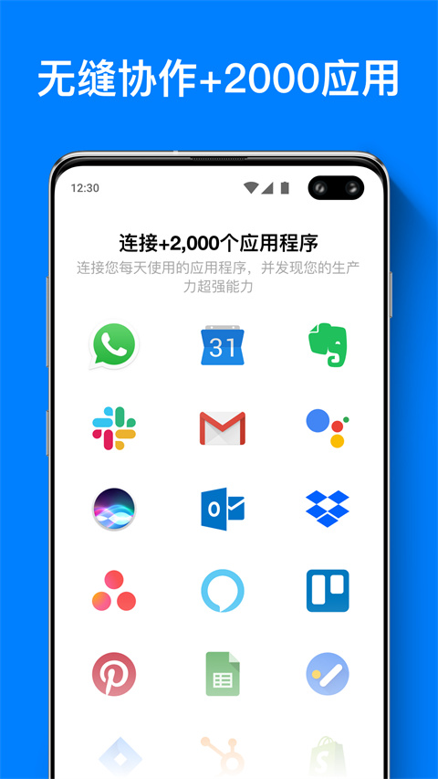

翻了 Any.Do 半年才挖到的 4 个狠活——晨间仪式、聊天框建任务、AI 拆大活、每天清零
你以为 Any.Do 只是个待办清单？Moment 晨间审视、WhatsApp 机器人、AI 拆子任务、My Day 强制重置，这四个藏得真深的功能把任务管理玩出了新花样
你以为 Any.Do官网 上那个界面清爽的待办清单——打开、打字、打勾，完事。我从Any.Do下载装上它半年，也是这么想的。直到某次深夜翻设置翻到 Integrations 那页，才发现这玩意儿肚子里藏了一堆官方宣传里几乎不提的狠活，每一个都能把"任务管理"这四个字重新定义一遍。
Moment：不是计时器，是晨间决策仪式
大多数人手机里躺着十几条过期任务，晚上躺床上刷手机，早上起来又刷一遍，就是不敢点开处理。Any.Do 的 Moment 就是治这个的。
它藏得不算特别深——进入任意列表或聚合视图，点右上角三个点就能看见 Start Moment。但真正让它好用的是定时启动：Settings → Daily Push → 类型选 Moment → 设好时间和每周几，到点推送一按就进入流程。我设的是早上 7:45，咖啡刚泡好那三分钟，Moment 自动拉起来。具体设置项记不住？翻一下Any.Do文档里的晨间规划章节就清楚了。
界面极简到粗暴：屏幕中央一张任务卡片，底下四个大按钮——Today、Later、Done、Delete。没有二级菜单，没有滑块，你必须当场给每个积压任务做一个决策。选 Later 会直接弹日期选择器，Today 留在清单里，Done 打勾，Delete 就真没了。做完自动同步，全程不用保存。

Free 用户每月 5 次，Premium 无限。别觉得 5 次少——真正需要"强迫自己过一遍积压任务"的，就是那些你开始逃避的早晨。我每月用不满 3 次，但每次用都能清掉七八条"过期了一直没动"的垃圾任务。
提醒一个坑：Moment 只处理个人任务，Family 和 Workspace 的板任务不会进来。而且仅限移动端，Web 端和桌面端没有。如果你用它管团队协作任务，那这功能对你来说就是个摆设。
WhatsApp 机器人：在聊天框里建任务
这是我见过最反直觉的集成——Any.Do 直接把任务管理塞进了 WhatsApp。
激活路径：Settings → Integrations → WhatsApp → 输绑定手机号 → 收验证码。激活后 WhatsApp 里会多一个 Any.Do Personal Bot 的联系人，然后就开始放飞了：
- 发"下午三点写周报" → 自动创建带 15:00 截止时间的任务
- 语音消息直接转任务（Premium 专属）
- 把任何聊天里的消息转发给 Bot → 消息内容变任务
- 任务到期时，Bot 直接发 WhatsApp 提醒，不用打开 Any.Do
我把它当成"灵感捕获器"——刷 WhatsApp 看到朋友推荐的好店，直接转发给 Bot，事后不会忘；路上突然想到要给猫买驱虫药，对着 Bot 说一句"明天下午给猫买驱虫药"，完事。比解锁手机 → 切应用 → 建任务 → 打字快至少三倍。

Premium 专属，Workspace 用户还能把整个团队的 WhatsApp 群连进来，@Any.Do 就能建团队任务。副作用：Bot 会把所有到期任务推到 WhatsApp 里，如果你的 WhatsApp 已经被工作群轰炸了，建议在 Settings → Integrations 里关掉"重要性低的任务"提醒，或者直接静音 Bot 聊天（静音不影响建任务）。
AI 拆子任务：别从零开始想，让它帮你打草稿
"筹备生日派对"、"准备面试"、"策划一次旅行"——这些标题放在待办清单里像一座山，你盯着它看半小时，不知道第一步该干什么。
Any.Do 的 AI 拆子任务藏在一个极不起眼的入口：打开那个大任务，在 Subtasks 区域旁边点 ⋯ 菜单，选 Suggest。移动端更简单，打开大任务直接点 Suggest 按钮。AI 会吐出一组建议子任务，你可以全采纳（Agree）、逐条勾选、不满意刷新（Try again）。
我用它拆过一次"筹备生日派对"，AI 给了二十多条建议——订蛋糕、布置场地、准备零食、联系客人、买礼物……确实比我自己从零想省至少一半时间。但别直接全收：AI 写"订蛋糕"，你得改成"订 12 寸黑森林蛋糕"；AI 可能把二十条都给你，你只需要十条；AI 的默认顺序未必是你习惯的顺序，拖一拖就好。
Premium 及以上可用，Family 和 Workspace 的板任务里也能用。我的做法：用 AI 打草稿 → 逐条过一遍删改 → 按调整后的顺序逐个完成。比自己从零开始想高效得多，但最终结构一定要自己把关。
My Day：每天强制清零的反直觉设计
你手机里的待办清单是不是积了几十条？昨天没做完的滚到今天，今天没做完的滚到明天，清单越来越长，压力越来越大。
Any.Do 的 My Day 偏不这么干。它每天凌晨完全重置，昨天没做完的任务不会自动滚进来。你早上起来看到的是一张空白面板，想把什么任务丢进今天，完全由你自己决定。
固定（Pin）一个任务，它第二天重置后会自动保留——那些你今天没做完、明天确实还要继续的事，Pin 一下就行。Smart Suggestions（侧边栏灯泡图标）会根据你的历史完成情况和到期时间，自动挑出"可能该今天做的事"，一键加进 My Day。
很多用户的节奏是：早上先跑 Moment 过一遍积压任务做决策，然后把决定留今天的任务丢进 My Day 聚焦执行。两个功能是互补的——Moment 帮你决策哪些值得今天做，My Day 是执行的主战场。
什么人用得上、什么人可以无视
Moment 适合那些"任务清单越积越长、不敢打开"的拖延症患者；WhatsApp Bot 适合 WhatsApp 重度用户，把日常灵感和聊天碎片直接转成任务；AI 拆子任务适合那些经常面对大项目、但不知道从哪动手的人；My Day 的强制重置适合被"永远没做完的清单"压得喘不过气的人。
但如果你本身就是个"每天任务不超过三条"的极简派，这些功能对你来说反而是噪音。Moment 每月 5 次配额、WhatsApp Bot 只在 Premium 有、AI 拆子任务也是 Premium 专属——别为了这些功能特意升级，先用免费版把基础功能用顺，再考虑要不要解锁更多。
最后一句话
Any.Do 官网看起来就是个干净的待办清单应用，下载量一直很高、界面清爽、同步稳定，这是它的"面子"。但真正把它用透的人，都是把 Moment 设成晨间仪式、把 WhatsApp Bot 当灵感捕获器、用 AI 拆任务打草稿、让 My Day 每天清零重置——四个藏得深的功能，每一个都在帮你更聪明地管理"今天"。